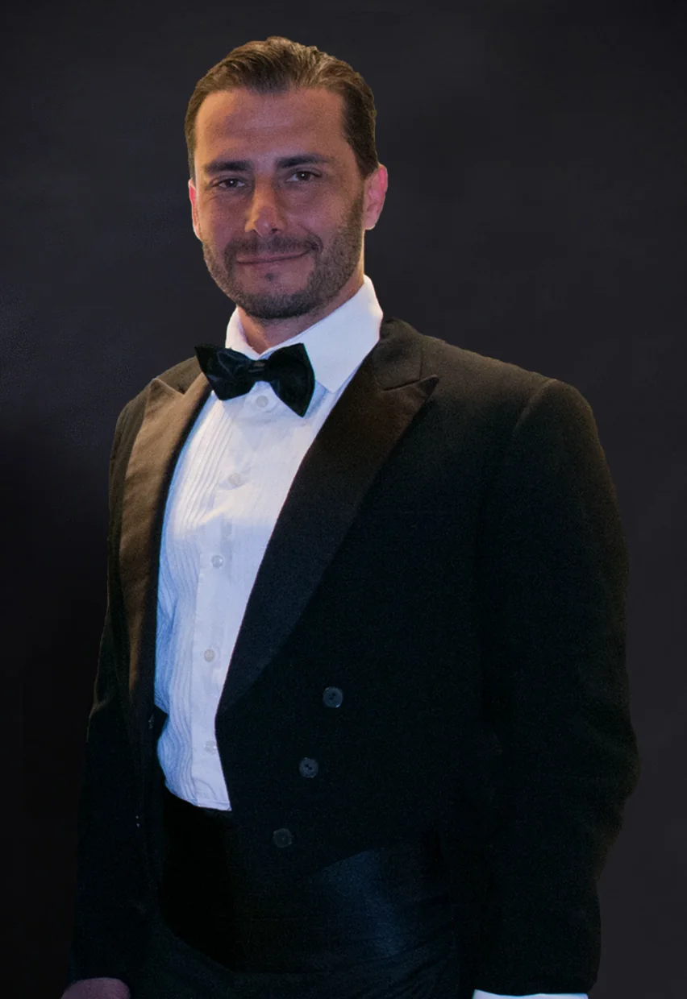

anos de trajetória artística entre Brasil, Estados Unidos e Europa

Biografia
Uma trajetória entre ópera, televisão, crossover e redes sociais, levando a força do canto lírico para cada vez mais pessoas.

Max Wilson Pereira é um tenor brasileiro radicado em Viena, artista de presença cênica marcante e voz construída entre a tradição lírica e a comunicação direta com o público. Além da técnica operística, dedicou anos ao estudo do canto musical, desenvolvendo também o domínio de uma emissão mais suave, íntima e expressiva. Nascido em São Paulo e criado no Rio de Janeiro, descobriu a paixão pelo canto aos 18 anos, ao ouvir Luciano Pavarotti, e desde então transformou essa inspiração em uma carreira que atravessa palcos, televisão, gravações e plataformas digitais.
seguidores no Instagram acompanhando sua arte e seu humor
base artística e musical de uma carreira internacional
Formação e Primeiros Passos
Ainda jovem, Max iniciou seus estudos com o tenor Eduardo Alvares enquanto cursava a CAL, Casa das Artes de Laranjeiras, onde concluiu o Curso Profissionalizante de Ator. A formação teatral se tornou uma parte essencial de sua identidade artística: não apenas cantar, mas contar uma história, ocupar o palco e criar uma conexão viva com quem assiste.
Após anos de estudo em canto lírico, teoria musical e piano, seguiu para Nova York em 2005, onde estudou com Evelyn La Quaif. No ano seguinte, foi convidado pelo professor Sebastian Vittucci para estudar em Viena, na Áustria, frequentando a Konservatorium Wien Privatuniversität em canto lírico e opereta. Também estudou na Vienna Konservatorium com o tenor Agim Hushi, instituição onde obteve seu bacharelado como solista de ópera.
Palcos, Ópera e Televisão
Na Áustria, Max participou de concertos, óperas e operetas, destacando-se em papéis como Nemorino, em L'Elisir d'Amore, de Donizetti, e Herzog von Urbino, em Eine Nacht in Venedig, de Johann Strauss. Em 2007, cantou no Gran Concerto Lírico di Ferragosto, interpretando árias italianas diante de um público exigente.
Entre os momentos importantes de sua trajetória internacional, foi convidado a cantar na Rússia em duas ocasiões. Uma dessas apresentações aconteceu no Taneyevsky Festival 2017, com a Vladimir Governor Symphony Orchestra sob regência do maestro Artiom Markin.
Depois de três anos em Viena, retornou ao Brasil a convite da Sony Music para integrar o grupo Quattro e gravar um CD. Em 2009, apresentou-se no oratório Colombo, de Carlos Gomes, no Theatro Municipal do Rio de Janeiro. Em 2010, participou da gravação do DVD de Hebe Camargo, interpretando Dio come ti amo no Credicard Hall, em São Paulo, e também apareceu na novela Tempos Modernos, em uma cena de Tosca ao lado de Alessandra Maestrini.
Sua trajetória inclui ainda trabalhos com nomes como Bibi Ferreira, participação na minissérie Aline, estreia mundial da ópera Fedra e Hipólito, no Palácio das Artes, e atuação como preparador vocal no Domingão do Faustão, auxiliando Jonatas Faro no quadro Artista Completão.
Crossover, Humor e Público Digital
Nos últimos anos, Max passou a levar sua voz para um público ainda maior nas redes sociais. Misturando técnica lírica, música pop, paródias criativas e performances de rua, criou uma linguagem própria: sofisticada sem ser distante, divertida sem perder a emoção, popular sem abandonar a excelência vocal.
Seus vídeos já ultrapassaram a marca de 1 milhão de visualizações, e sua comunidade digital reúne mais de 200 mil seguidores no Instagram e milhares de inscritos no YouTube. Com carisma, humor e uma voz de formação clássica, Max aproxima a ópera de quem talvez nunca tivesse imaginado se emocionar com ela.
O Momento Atual
Hoje, Max Wilson Pereira dedica grande parte de sua energia à construção de uma presença digital cada vez mais forte, criando vídeos que aproximam a ópera, o canto lírico e o crossover de públicos que talvez nunca tivessem imaginado se emocionar com esse repertório. Radicado em Viena e profundamente conectado ao Brasil, ele transforma ruas, praias, estações, casas e situações cotidianas em pequenos palcos, onde a técnica vocal encontra a surpresa, a emoção e o humor.
Seu trabalho nas redes nasce do desejo de mostrar que a voz lírica não precisa viver distante das pessoas. Em performances emocionantes, paródias musicais, interações com desconhecidos e vídeos bem-humorados, Max leva a ópera para novos contextos, despertando curiosidade, risadas e reações espontâneas. É nesse encontro entre excelência artística e comunicação direta que ele segue criando novos caminhos para compartilhar sua arte com quem já o acompanha e com quem ainda vai descobri-lo.